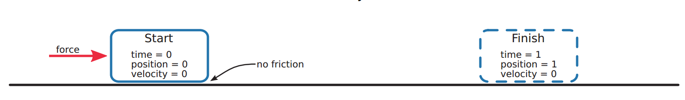
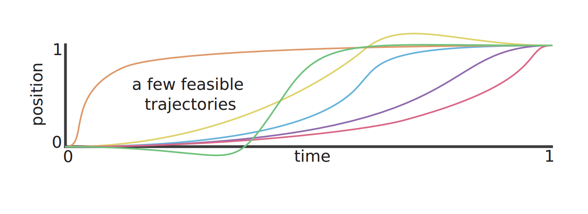
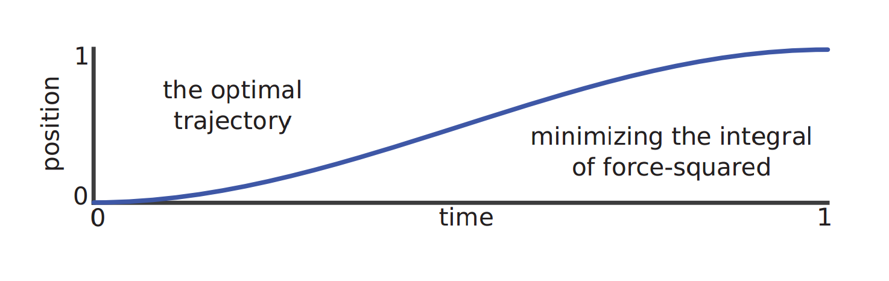
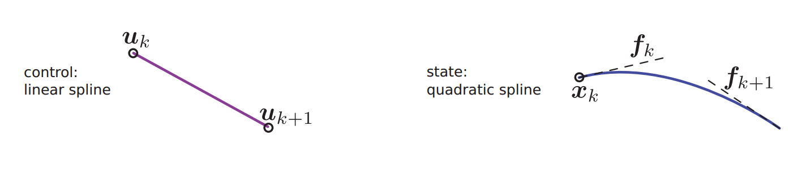
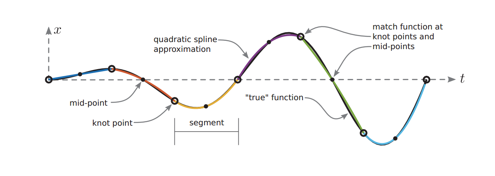
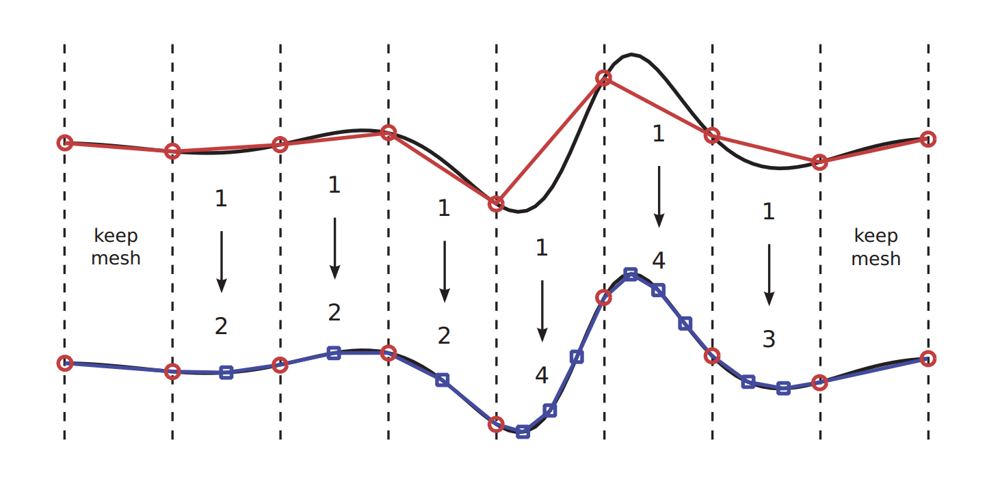

本文主要讨论轨迹优化问题中的直接配点法，希望通过此教程帮助理解轨迹优化问题的基本概念与直接配点法的相关理论基础，最后我们还会讨论一些具体实现问题。直接配点法最终是通过非线性规划求解器来得到最终结果，因此在阅读本文之间可以先了解NLP问题相关基础知识，当然这并不影响对本文的理解，本文仅需要一些简单的高等数学与微分方程的知识。
轨迹优化问题
问题简介
轨迹用来描述一个物体的运动过程，通常是关于时间的变量。轨迹优化一种用于寻找最佳轨迹选择的方法，通常是通过选择合适的系统输入或控制量，是系统完成期望的运动过程。在控制领域，轨迹优化近似于最优控制，但从更广的概念上来讲，轨迹优化更具一般性。
下面我们用一个例子来进一步说明轨迹优化问题。

如图所示，一个滑块放置在光滑地面上，并受到一个水平方向的作用力。我们想要滑块在里的作用下，在1s的时间内从开始位置运动到指定位置，并刚好停在该处。这个问题存在着无数种可能的运动轨迹，进一步，我们希望从中确定一条最优的轨迹，如图所示。


我们可以把这个问题用数学语言形式化。系统满足如下的动力学方程：
$$\dot{x}=\nu, \quad \dot{\nu}=u$$
并要求满足如下的边界约束：
$$\begin{array}{ll}
x(0)=0, & x(1)=1 \
\nu(0)=0, & \nu(1)=0
\end{array}$$
轨迹优化关心在一定指标下的最优轨迹，这样的指标可以用如下的目标函数来描述：
$$\min {u(t), x(t), \nu(t)} \int{0}^{1} u^{2}(\tau) d \tau$$
形式化描述
一般来说，轨迹优化问题通过在一定的约束条件下优化如下的目标函数来得到最优轨迹：
$$\min {t{0}, t_{F}, \boldsymbol{x}(t), \boldsymbol{u}(t)} \underbrace{J\left(t_{0}, t_{F}, \boldsymbol{x}\left(t_{0}\right), \boldsymbol{x}\left(t_{F}\right)\right)}{\text {Mayer Term }}+\underbrace{\int{t_{0}}^{t_{F}} w(\tau, \boldsymbol{x}(\tau), \boldsymbol{u}(\tau)) d \tau}{\text {Lagrange Term }}$$
其中的约束条件包含如下形式：
系统的动力学约束：
$$\dot{\boldsymbol{x}}(t)=\boldsymbol{f}(t, \boldsymbol{x}(t), \boldsymbol{u}(t))$$
路径约束：
$$\boldsymbol{h}(t, \boldsymbol{x}(t), \boldsymbol{u}(t)) \leq \mathbf{0}$$
边界约束：
$$\boldsymbol{g}\left(t{0}, t_{F}, \boldsymbol{x}\left(t_{0}\right), \boldsymbol{x}\left(t_{F}\right)\right) \leq \mathbf{0}$$
和状态量与控制量边界：
$$\begin{array}{l}
\boldsymbol{x}{\mathrm{low}} \leq \boldsymbol{x}(t) \leq \boldsymbol{x}{\mathrm{upp}} \
\boldsymbol{u}{\mathrm{low}} \leq \boldsymbol{u}(t) \leq \boldsymbol{u}{\mathrm{upp}}
\end{array}$$
由于最终我们想要求得的是控制量关于时间的具体函数形式，而非一个值或一个参数，因此轨迹优化问题也可以理解为在一定约束或大量约束下的泛函问题。
变分法求解
（对变分法不熟悉的可以跳过本部分）
针对泛函问题，可以采用变分法进行求解。以滑块移动的问题为例，由于其目标函数可以表示为如下形式：
$$J=\int_{0}^{1} u^{2}(\tau) d \tau=\int_{0}^{1} \ddot{x}^{2}(\tau) d \tau$$
因此可以构建拉格朗日方程：
$$\mathcal{L}(t, x, \dot{x}, \ddot{x})=\mathcal{L}(\ddot{x})=\ddot{x}^{2}$$
对此应用推广的欧拉-拉格朗日方程：
$$\frac{\partial \mathcal{L}}{\partial x^{}}-\frac{d}{d t} \frac{\partial \mathcal{L}}{\partial \dot{x}^{}}-\frac{d^{2}}{d t^{2}} \frac{\partial \mathcal{L}}{\partial \dot{x}^{}}=0$$
可得：
$$\begin{aligned}
(0)-(0)-\frac{d^{2}}{d t^{2}}\left(2 \ddot{x}^{}\right) &=0 \
\frac{d^{4}}{d t^{4}} x^{} &=0
\end{aligned}$$
因此$x$具有三次函数的形式，将相应的边界条件代入，得到最优轨迹：
$$u^{}(t)=6-12 t, \quad x^{*}(t)=3 t^{2}-2 t^{3}$$
直接配点法-direct collocation methods
对于简单问题，使用变分法可以很快的求解出最优轨迹，但对于复杂的轨迹优化问题，状态变量或控制变量有可能达到几十万的维度，约束条件也会非常复杂。因此有必要研究通过数值方法求解轨迹优化问题，接下来我们介绍其中一种数值求解的思想，也就是直接配点法。对于一些其他的方法，例如shooting methods，则不在本文的讨论范围之内。接下来我们先通过滑块移动的问题来说明直接配点法的思想，之后再详细介绍梯形聚点法。
直接配点法的核心思想是将连续时间曲线离散为有限时间序列，从而把轨迹规划问题转化大规模非线性规划问题。首先，我们对轨迹进行离散化，将状态变量$x(t)$和$v(t)$表示为一系列离散时刻上的值，也称为配置点：
$$\begin{array}{l}
t \rightarrow t_{0} \ldots t_{k} \ldots t_{N} \
x \rightarrow x_{0} \ldots x_{k} \ldots x_{N} \
\nu \rightarrow \nu_{0} \ldots \nu_{k} \ldots \nu_{N}\
u \rightarrow u_{0} \ldots u_{k} \ldots u_{N} \
\end{array}$$
这些配置点实际上就是最终转化的NLP问题优化变量，$N$表示离散的细化程度，N越大则离散化误差越小，但优化单独越大。接下来我们要把原始问题用这些配置点进行近似表示，其核心思想是两个配置点之间的状态变化等于系统动力学的积分：
$$\begin{aligned}
\dot{x} &=\nu \
\int_{t_{k}}^{t_{k+1}} \dot{x} d t &=\int_{t_{k}}^{t_{k+1}} \nu d t \
x_{k+1}-x_{k} & \approx \frac{1}{2}\left(h_{k}\right)\left(\nu_{k+1}+\nu_{k}\right)
\end{aligned}$$
由于位置的微分等于速度，对等式两侧进行积分，从时刻$t_k$积分到时刻$t_{k+1}$。等式左侧自然等于两个状态之间的差值，而对于等式右侧我们用梯形积分公式进行近似。这里$h_k=(t_{k+1}-t_k)$。
我们把速度与作用力的动力学关系同样转化成上面的形式，忽略由梯形积分近似的误差，得到以下由配置点表示的约束方程：
$$\begin{array}{l}
x_{k+1}-x_{k}=\frac{1}{2}\left(h_{k}\right)\left(\nu_{k+1}+\nu_{k}\right) \
\nu_{k+1}-\nu_{k}=\frac{1}{2}\left(h_{k}\right)\left(u_{k+1}+u_{k}\right)
\end{array}$$
注意到通过离散化，我们把原来连续的动力学方程，转化为N个等式约束。当然为了满足题目要求，配置点还要满足以下的约束：
$$\begin{array}{ll}
x_{0}=0, & x_{N}=1 \
\nu_{0}=0, & \nu_{N}=0
\end{array}$$
最后，通过采用梯形积分近似的方法，将目标函数也用配置点进行表示：
$$\min {u(t)} \int{t_{0}}^{t_{N}} u^{2}(\tau) d \tau \quad = \min {u{0} \ldots u_{N}} \sum_{k=0}^{N-1} \frac{1}{2}\left(h_{k}\right)\left(u_{k}^{2}+u_{k+1}^{2}\right)$$
至此，滑块移动问题被完全转化为一个3N个优化参数（配置点），2N+4个约束的非线性规划问题，采用类似内点法的非线性规划求解器（IPOPT）进行求解，就可以得到问题数值结果。
梯形配点法
在上面的例子中，我们采用梯形公式来近似积分，将问题中的所用连续问题转化为离散问题，这种方法称为梯形配点法，下面对其进行详细说明。
积分方程的近似
积分方程一般出现在目标函数中，梯形配点法中采用被积函数两个时刻之间的梯形面积来近似积分：
$$\int_{t_{0}}^{t_{F}} w(\tau, \boldsymbol{x}(\tau), \boldsymbol{u}(\tau)) d \tau \quad \approx \sum_{k=0}^{N-1} \frac{1}{2} h_{k} \cdot\left(w_{k}+w_{k+1}\right)$$
微分方程的近似
微分方程一般出现在动力学方程中。直接配点法的关键特征之一是，它将系统动力学表示为一组约束，称为配点约束。梯形配点法将动力学方程写成积分形式，然后用梯形求积法来近似积分：
$$\begin{aligned}
\dot{\boldsymbol{x}} &=\boldsymbol{f} \
\int_{t_{k}}^{t_{k+1}} \boldsymbol{x} d t &=\int_{t_{k}}^{t_{k+1}} \boldsymbol{f} d t \
\boldsymbol{x}{k+1}-\boldsymbol{x}{k} & \approx \frac{1}{2} h_{k} \cdot\left(\boldsymbol{f}{k+1}+\boldsymbol{f}{k}\right)
\end{aligned}$$
然后在每对配置点之间都建立这种近似的约束关系：
$$\boldsymbol{x}{k+1}-\boldsymbol{x}{k}=\frac{1}{2} h_{k} \cdot\left(\boldsymbol{f}{k+1}+\boldsymbol{f}{k}\right), \quad k \in 0, \ldots,(N-1)$$
原始约束
离散后的配置点，应当满足原问题的状态约束、控制约束、路径约束、边界约束：
$$\begin{aligned}
\boldsymbol{x}<\mathbf{0} \quad &\rightarrow \quad \boldsymbol{x}{k}<\mathbf{0} \quad \forall k\
\boldsymbol{u}<\mathbf{0} \quad &\rightarrow \quad \boldsymbol{u}{k}<\mathbf{0} \quad \forall k\
\boldsymbol{g}(t, \boldsymbol{x}, \boldsymbol{u})<\mathbf{0} \quad &\rightarrow \quad \boldsymbol{g}\left(t_{k}, \boldsymbol{x}{k}, \boldsymbol{u}{k}\right)<\mathbf{0} \quad \forall k\
\boldsymbol{h}\left(t_{0}, \boldsymbol{x}\left(t_{0}\right), \boldsymbol{u}\left(t_{0}\right)\right)<\mathbf{0} \quad &\rightarrow \quad \boldsymbol{h}\left(t_{0}, \boldsymbol{x}{0}, \boldsymbol{u}{0}\right)<\mathbf{0} \quad
\end{aligned}$$
曲线插值
为了从配置点恢复连续轨迹，需要进行曲线插值。梯形配点法的将控制轨迹和系统动力学近似为分段线性函数，也称为线性样条。构造样条曲线时，术语结点*knot point *用来表示连接两个多项式段的任何点，对于梯形配点法而言，样条的结点与配置点是重合的。首先通过分段线性插值重建控制轨迹（$\tau=t-t_{k}$，$h_{k}=t_{k+1}-t_{k}$）：
$$\boldsymbol{u}(t) \approx \boldsymbol{u}{k}+\frac{\tau}{h{k}}\left(\boldsymbol{u}{k+1}-\boldsymbol{u}{k}\right)$$

之后重建状态变量的轨迹，需要说明的是，状态变量的轨迹是二次样条曲线的形式。因为在梯形配点法中，系统动力学是用线性样条近似，而状态轨迹是动力学方程的积分，因此具有二次形式。显然这样重建出的状态轨迹更准确，如下图所示。
$$\boldsymbol{f}(t)=\dot{\boldsymbol{x}}(t) \approx \boldsymbol{f}{k}+\frac{\tau}{h{k}}\left(\boldsymbol{f}{k+1}-\boldsymbol{f}{k}\right)$$
$$\boldsymbol{x}(t)=\int \dot{\boldsymbol{x}}(t) d \tau \approx \boldsymbol{c}+\boldsymbol{f}{k} \tau+\frac{\tau^{2}}{2 h{k}}\left(\boldsymbol{f}{k+1}-\boldsymbol{f}{k}\right)$$
$$\boldsymbol{x}(t) \approx \boldsymbol{x}{k}+\boldsymbol{f}{k} \tau+\frac{\tau^{2}}{2 h_{k}}\left(\boldsymbol{f}{k+1}-\boldsymbol{f}{k}\right)$$

实现问题
接下来我们来讨论一些配点法实际实现时可能遇到的问题和解决方法。
初始化问题
几乎所有的轨迹优化技术都需要一个良好的初始猜测来开始优化。良好的初始化将确保求解器快速地得到全局最优解，一个糟糕的初始化会导致非线性规划求解器无法解决一个正确的优化问题。初始猜测的选择会影响优化最终收敛到哪一个局部最小值，不合适的初始值会使求解器优化到一个局部极小值，而约束的存在使情况变得更糟，优化器甚至无法找到一个可行的解决方案。
轨迹优化的最佳初始化通常需要一些特定的知识，但也有一些通用的方法可以采用。通常建议尝试集中不同的初始化策略，检查他们是否都优化到同一个结果。最简单的初始方法是假设轨迹是状态空间的一条直线，当然也可以设计为可能预想到的结果。
对于更复杂的轨迹优化问题，我们建议先从一个简单的问题开始优化，以优化结果作为下一个优化问题的初始猜测，然后构造一系列优化问题，逐渐接近最终的问题。举例来说，让一个双足行走机器人以3.0m/s的速度奔跑或许是一个比较复杂的优化问题，你可以先从1.0m/s的行走开始优化，逐渐增加前进速度，直至达到期望的速度，在这过程中每次优化的结果都作为下一次优化的初始估计。
网格细化
直接配点法采用分段多项式样条函数来对轨迹曲线进行近似，显然离散的时间越短、多项式的阶数越高，则近似的精度越高。网格细分是在一系列不同的配置网格上求解轨迹优化问题的过程，也称为配置网格。一般情况下，初始的网格比较粗糙，配置点数量较少，并采用较低阶的配置方法，而后续的网格有更多的点和更高阶的配置方法。这种迭代策略是为了以最少的计算工作量获得最精确的解决方案：初始的粗网格位置计算量小，并能给出一个比较好的初始估计，之后通过更精细的网格配置得到更准确的结果。

误差分析
在所述的轨迹优化方法中存在两种形式的数值误差：转换误差和求解误差，这里我们主要关注前一种误差，即量化离散所带来的误差。衡量误差的标准有很多，这里我们用候选轨迹的动力学误差进行评价。由于在任何时刻系统都要满足动力学方程，因此有:
$$\dot{\boldsymbol{x}}^{}(t)=\boldsymbol{f}\left(t, \boldsymbol{x}^{}(t), \boldsymbol{u}^{*}(t)\right)$$
公式中的变量都可以由配置点插值得到，因此动力学方程误差为：
$$\varepsilon(t)=\dot{\boldsymbol{x}}(t)-\boldsymbol{f}(t, \boldsymbol{x}(t), \boldsymbol{u}(t))$$
上式在配置点处应该严格等于零，但在配置点之间一般不为零。通过误差的积分可以量化转化误差：
$$\boldsymbol{\eta}{k}=\int{t_{k}}^{t_{k+1}}|\varepsilon(\tau)| d \tau$$
若转化误差大于一定水平，则需要进一步进行网格细化。